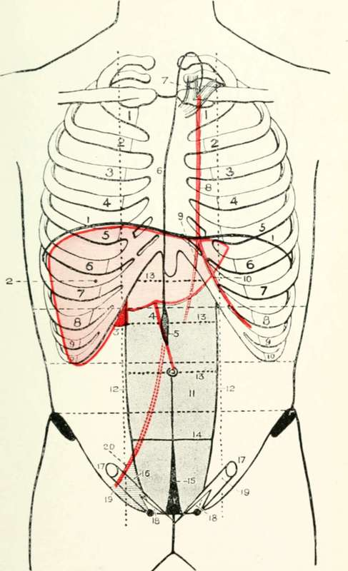
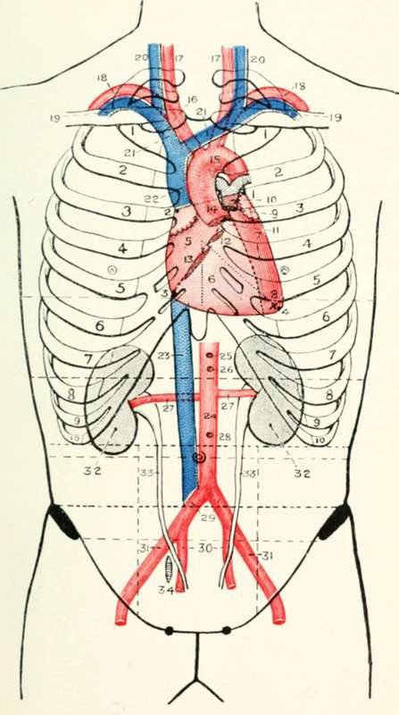

The Valves Of The Heart
Description
This section is from the book "Landmarks And Surface Markings Of The Human Body", by Louis Bathe Rawling. Also available from Amazon: Landmarks and Surface Markings of the Human Body.
The Valves Of The Heart
1. The pulmonary valve is situated at the highest level, and lies opposite the upper border of the third costal cartilage, close to its junction with the sternum. (Fig. XV, 9.)
2. The aortic valve lies just below and internal to the pulmonary valve at the lower border of the third left costal cartilage at its junction with the sternum. (Fig. XV, 11.)
3. The mitral or left auriculo-ventricular valve is situated behind the left half of the sternum at the level of the fourth chondro-sternal junction. (Fig. XV, 12.)
4. The tricuspid or right auriculo-ventricular valve lies very obliquely behind the sternum at the level of the fourth interspace and the anterior extremities of the fifth costal cartilages, extending downwards and to the right almost as far as the sixth chondro-sternal junction. (Fig. XV, 13.)
The Aorta And Other Vessels, Etc
The ascending aorta, 2 to 2 1/2 inches long, arises behind the left border of the sternum at the level of the third costal cartilage, and passes upwards and to the right towards the right border of the sternum at the level of the second costal cartilage. (Fig. XV, 14.)
The aortic arch is directed backwards and to the left, (Fig. XV, 15.) the upper limit lying about 1 inch below the suprasternal notch, or half-way between that notch and the angle of Ludwig. The arch becomes the descending aorta at the left side of the lower part of the body of the fourth dorsal vertebra.
The descending thoracic aorta, 7 to 8 inches long, passes onwards through the posterior mediastinum, and pierces the diaphragm at the level of the twelfth dorsal vertebra. The site of diaphragmatic perforation is represented on the surface by a point situated just to the left of the middle line, two fingers' breadth above the transpyloric plane.*
The innominate artery, 1 1/2 to 2 inches long, (Fig. XV,16.) arises from the aortic arch in the middle line 1 inch below the suprasternal notch, and passes upwards and to the right to the right sterno-clavicular articulation, at which level it bifurcates into its two terminal branches.
* Any "planes" mentioned in this chapter will be explained in the chapter on the abdomen.
The left common carotid (thoracic course) arises from the aortic arch on a posterior plane to, (Fig. XV, 17.) and slightly to the left of, the trunk of the innominate artery, and passes upwards and to the left to the left sterno-clavicular articulation.
The left subclavian artery (thoracic course) arises from the aortic arch on a posterior plane to, (Fig. XV, 18.) and slightly to the left of, the thoracic part of the left common carotid artery, and passes almost vertically upwards behind the left border of the sternum to the left sterno-clavicular joint.
The superior mediastinum is bounded above by the plane of the thoracic inlet and below by a plane which passes backwards from the angle of Ludwig in front to the lower border of the fourth dorsal vertebra behind (Ludwig's plane, Fig. XVIII.)
The pulmonary artery arises opposite the upper border of the third left costal cartilage at its junction with the sternum, (Fig. XV, 10.) and passes backwards and slightly upwards to its bifurcation, which takes place opposite the second left costal cartilage.
The internal mammary artery arises from the first part of the cervical course of the subclavian artery, (Fig. XX, 8.) and passes almost vertically downwards behind the corresponding sterno-clavicular joint. In its further thoracic course, the artery lies 1/2 inch external to the outer border of the sternum,(Fig. XX, 9,10) bifurcating opposite the sixth costal cartilage or the sixth interspace into the musculo-phrenic and superior epigastric arteries. The former vessel curves outwards, following the line of the costal arch, whilst the latter passes onwards to enter the sheath of the rectus abdominis muscle.
Fig. XX. The Liver, Anterior Abdominal Wall, Etc
1. The diaphragm.
2. The liver.
3. The gall-bladder.
4. The ligamentum teres.
5. The receptaculum chyli.
6. The thoracic duct.
7. The venous termination of the duct
8. The internal mammary artery.
9. The superior epigastric artery.
10. The musculo-phrenic artery.
11. The rectus abdominis muscle.
12. The linae semilunares. l3. The linae transversae.
14. The semilunar fold of Douglas.
15. The urachus.
16. Hesselbach's triangle.
17. The internal abdominal ring.
18. The external abdominal ring.
19. The inguinal canal.
20. The deep epigastric artery,
The left innominate vein, 3 inches long, is formed opposite the left sterno-clavicular joint, and passes to the right, slightly overlapping the upper part of the aortic arch, (Fig. XV, 21.)and occupying the greater part of the space between the summit of the arch below and the suprasternal notch above.
The right innominate vein is formed at the right sterno- clavicular joint, (Fig. XV, 21.) and passes obliquely downwards and inwards to meet the corresponding vein of the opposite side at the lower border of the first right costal cartilage close to its junction with the sternum.
The superior vena cava, formed by the junction of the above two veins, (Fig. XV, 22.) is directed almost vertically downwards from the lower border of the first right costal cartilage close to its junction with the sternum, to open into the right auricle of the heart at the level of the upper border of the third right chondro-sternal junction.
The inferior vena cava enters upon its short intrathoracic course by passing through the quadrate opening of the diaphragm at the level of the eighth dorsal vertebra, (Fig. XV, 23.)opening into the right auricle of the heart opposite the fifth right interspace and the adjoining part of the sternum.
The vena azygos major drains the whole thoracic wall, except the first space on the right side and the upper three spaces on the left. It opens into the superior vena cava at the level of the lower part of the second right interspace, curling round the root of the right lung in order to reach its destination.
Fig. XV. The Heart, Great Vessels, Kidney, And Ureter
1-4. The four points of the heart.
5. The auricular area.
6. The ventricular area.
7. The left ventricle.
8. The apex beat.
9. The pulmonary valve.
10. The pulmonary artery.
11. The aortic valve.
12. The mitral valve.
13. The tricuspid valve.
14. The ascending aorta.
15. The aortic arch.
16. The innominate artery.
17. The right and left common carotid arteries.
18. The right and left subclavian arteries.
19. The right and left subclavian veins.
20. The right and left internal jugular veins.
21. The right and left innominate veins.
22. The superior vena cava.
23. The inferior vena cava.
24. The abdominal aorta.
25. The coeliac axis.
26. The superior mesenteric artery.
27. The renal arteries.
28. The inferior mesenteric artery.
29. The common iliac arteries.
30. The internal iliac arteries.
31. The external iliac arteries.
32. The kidney. 33. The ureters. 34. The ovary.
The main aortic intercostal vessels occupy the subcostal groove of a rib as they pass round the chest wall, lying between the corresponding vein above and the nerve below.
Continue to: